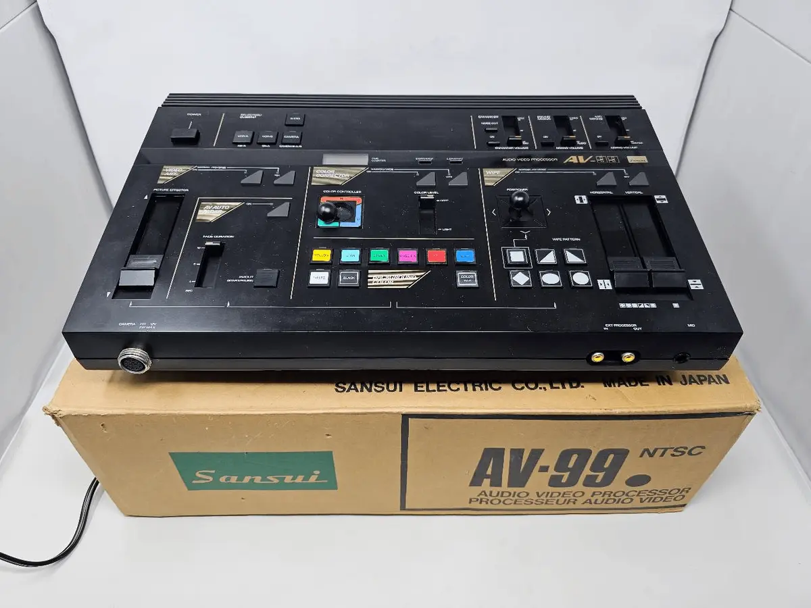

test
test
9:45pm

I came into posession of a Sansui AV-99 and oh boy is it cool. It's an analog video mixer. It has two video inputs, so you can switch between camera A and camera B, and it'z got some different effects that play with color and also some transitions, and it really deson't do much but it probably does more than I know. So I plugged in two of my camcorders, played around with it a bit, and the effects make the output REALLY fucky, it very easily stops being stable. I don't know why. But anyway here is a silent video of me playing around with the machine. Also someone else's picture of the machine itself.